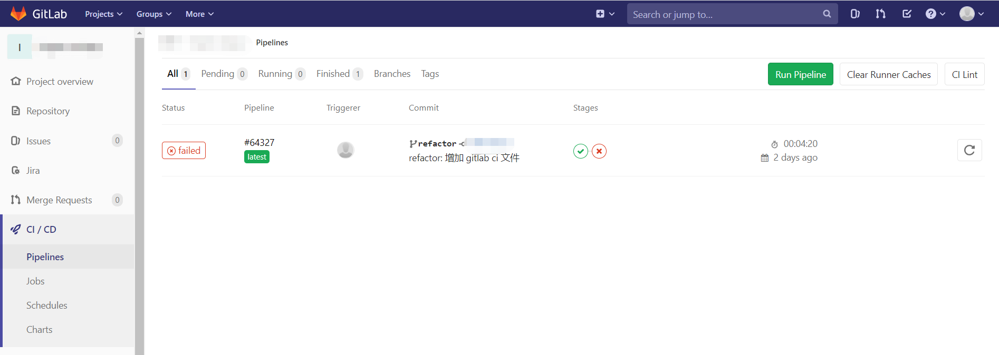

利用 GitLab CI/CD 搭建质量检查流水线
前面的文章有介绍团队如何去提高代码质量，其中比较重要的一个环节就是实现质量检查的流程化与自动化。这里的质量检查可以通过 ESLint 和 Sonar 的代码质量扫描实现，流程化自动化则采用 CI/CD 框架如 Jenkins、GitLab 来实现。
框架介绍
GitLab
GitLab 其实大家很熟悉，就是类似于 Github、码云之类的代码托管平台。这里想介绍的是 GitLab 的持续集成持续交付能力即 CI/CD，相较于 Jenkins， GitLab CI/CD 配置较为简单、与代码仓库结合紧密且可视化程度高。
Sonar
Sonar 是一个静态代码扫描工具，它不仅可以像 ESLint 一样进行代码的质量检查，还可以从安全性、可维护性、测试覆盖率、代码复杂度、代码重复度等多个维度提供图表化的直观度量，每一次的扫描结果也会记录到服务端，以提供项目开发过程中的代码质量变化趋势。
搭建质量检查流水线
流水线就是质量检查自动化的载体，它包含 ESLint 和 Sonar 两个步骤，每次提交代码将会自动触发流水线的运行，每次流水线运行也将触发 ESLint 和 Sonar 的执行。
GitLab CI/CD 的配置只需要在代码根目录下添加一个 yaml 文件 .gitlab-ci.yml，在这个配置文件中增加 ESLint 和 Sonar 的步骤即可，示例代码如下：
1 | stages: |
介绍一下其中部分参数：
stages：即流水线的步骤，这里一共定义了两个步骤：lint 和 sonar，注意 stages 是串行的，默认情况下只有前一个步骤运行成功了，才能触发后面步骤的运行；image：即步骤执行脚本时所用到的镜像，在 lint 这一步骤中用到的镜像是 node 的最新版本，因为脚本中有 npm，所以必须拉取node 镜像才能执行，sonar 步骤中的镜像则拉取了 sonar-scanner 的最新版本；script：这个比较容易理解，即每个步骤运行时对应要执行的脚本。
其中 sonar 这一步骤的脚本定义了四个参数，意义如下：
| 参数 | 含义 | 是否必须 |
|---|---|---|
| sonar.projectKey | sonar 服务端中对应的 project key，需要先在 sonar 中新建对应的项目 | 是 |
| sonar.sources | sonar 扫描的代码目录，为相对根目录的路径 | 否 |
| sonar.host.url | sonar 服务端地址 | 是 |
| sonar.login | sonar 服务端生成的 token，鉴权使用 | 否 |
验证
GitLab 流水线默认情况下 push 了代码就会触发运行，提交代码后进入 GitLab –> CI/CD –> Pipelines 查看是否运行成功，每个 stage 可以点击进去查看相关日志，sonar 运行完成后，进入 sonar 服务端查看对应的扫描结果。

利用 GitLab CI/CD 搭建质量检查流水线